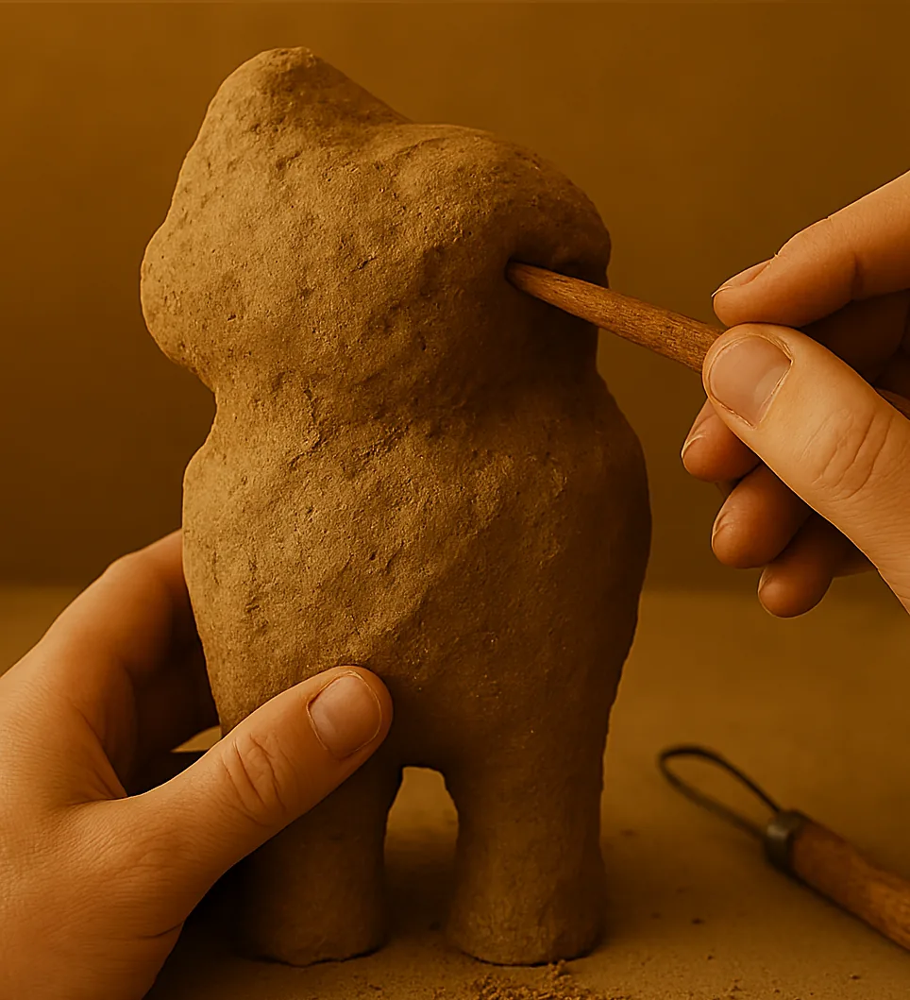
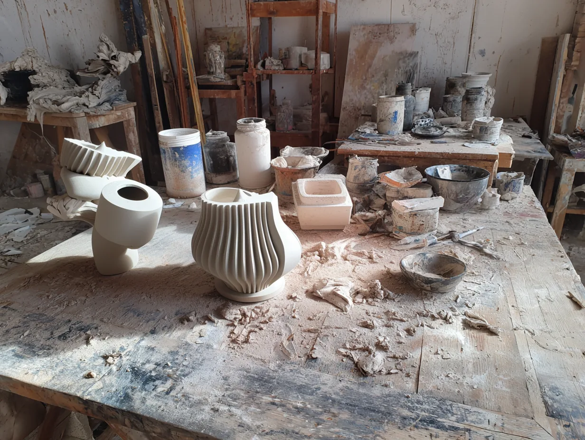
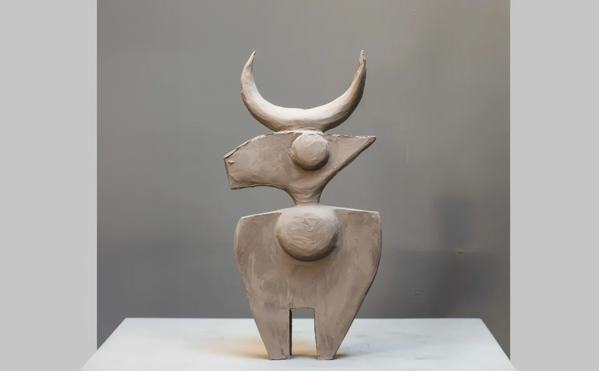

À propos
J’ai arpenté des terres que le temps a oubliées, des contrées effacées de la mémoire des hommes, et d’autres encore vierges de tout nom. J’y ai rencontré des peuples aux rites disparus, des civilisations surgies des replis secrets de l’éternité, comme par enchantement, et des paysages suspendus hors du monde, flottant entre veille et songe, entre lumière et silence.


De ces errances, je ne rapporte que des éclats : formes, couleurs, matières. Certains se donnent tout entiers, comme des offrandes ; d’autres se dérobent, gardant leurs secrets tels des sphinx immémoriaux. Pourtant, chacun d’eux conserve la mémoire des lieux et des êtres que j’ai croisés.
Chaque création devient alors un témoignage incarné de ce que j’ai vu — ou cru voir —, et offre à celui qui s’y attarde le pouvoir de suivre mes pas dans un monde où l’espace se dilate, où le réel se trouble, et où l’inconnu se fait plus vaste, plus étrange, plus fascinant que tout ce que l’on aurait pu imaginer.
